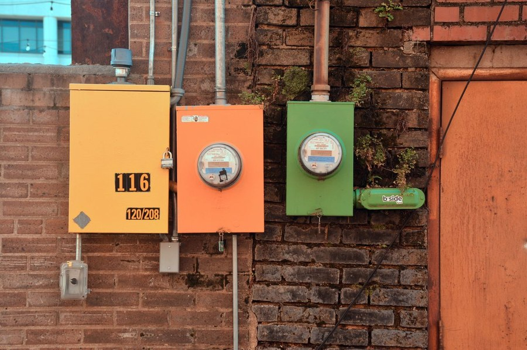
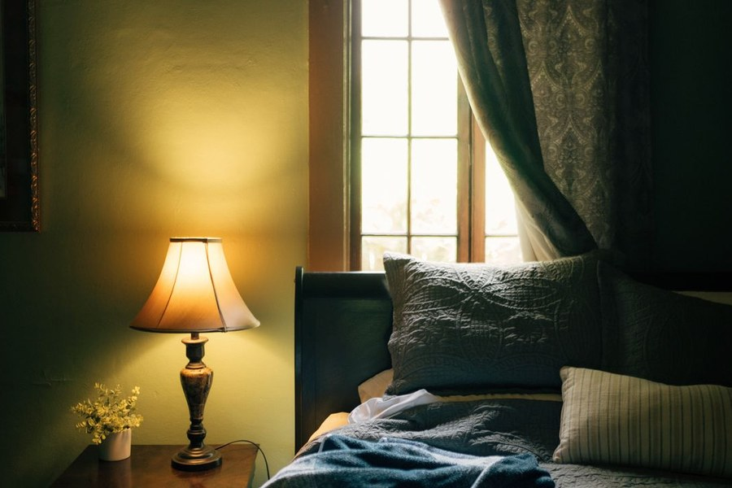
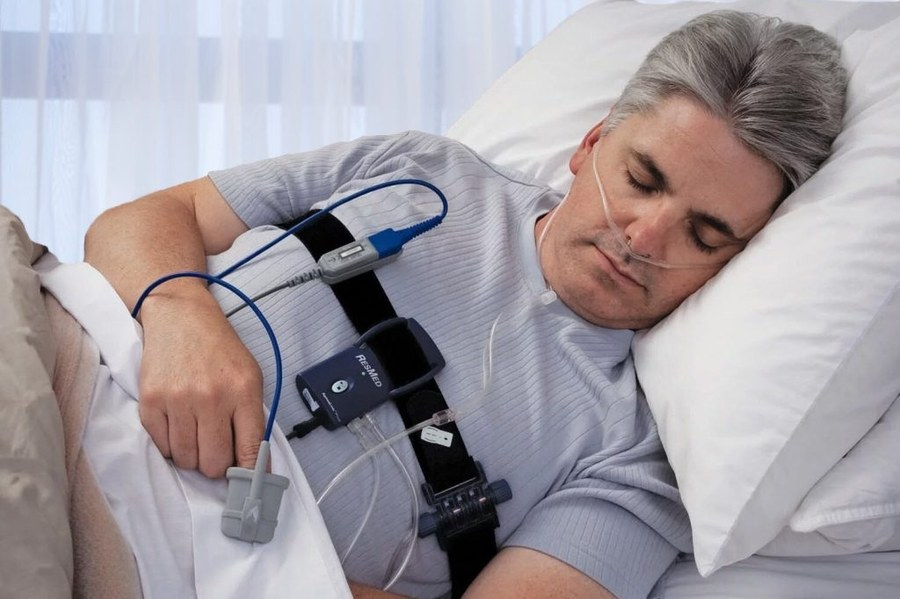

My Office Wasn’t My Ally.
For a few months, I thought I was just tired.
Continue Reading →Growing up, I was always a “why” guy. Why is the sky blue? Why are we doing it this way? But somewhere along the way — with age and a lot more knowledge — I became more of a “have you ever wondered” and “what if” kind of person.
That shift is what this page is about. Here you’ll find the musings, discoveries, and questions I can’t stop thinking about — exploring ideas across science, behavior, history, and whatever else pulls at my curiosity.
the light needs somewhere to landFor a few months, I thought I was just tired.
Continue Reading →
They sent a letter. It called it an upgrade.
Continue Reading →
For years, my wife woke at 1:30 or 2 in the morning.
Continue Reading →
My wife had been watching me sleep — or trying to. She’d noticed something in my breathing, a pattern that worried her, and eventually her concern became the nudge I needed. I signed up for a home sleep study.
Continue Reading →